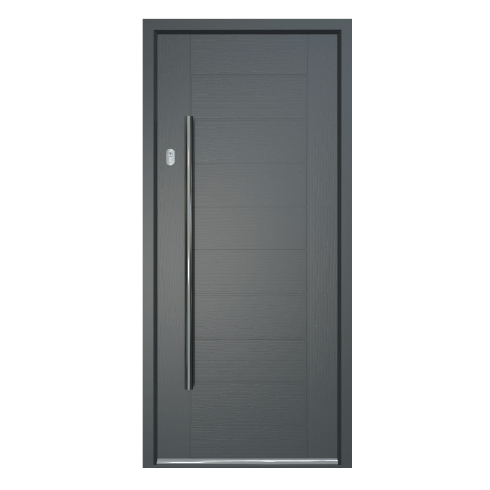
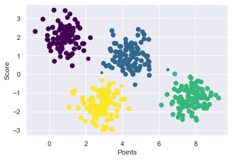

We extract features from the recorded sound, then compare it with the ones stored in the model.
Finally, we get the mfcc which is the most recognizable feature in the model.
Spectral Centroid
Please say the password

Gaussian Mixture model (GMM) is probabilistic model for representing normally distributed subpopulation, it is considering each subpopulation is cluster, it is usually used for unsupervised machine learning and clustering. GMM is more efficient than k-means because it avoids the overlap.
1. Extract features from the input record.
2. Get the scores of those features on our models.
3. Recognise the person and the spoken sentance.
We extract features from the recorded sound, then compare it with the ones stored in the model.
Finally, we get the mfcc which is the most recognizable feature in the model.